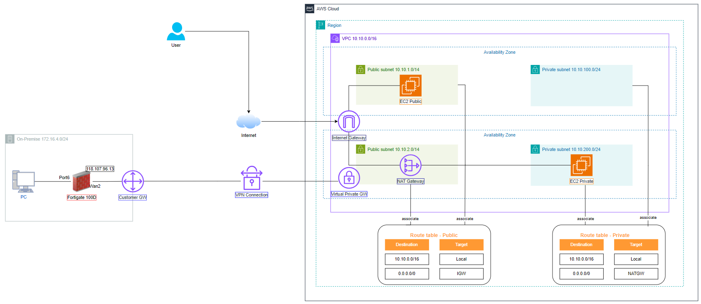

In this lab, you will learn the steps to establish a connection between the Amazon Web Service Site and the On-Premise DC Site using the Fortigate 100F device. Practice creating a connection between VPN servers on AWS and machines in the On-Premise data center.
